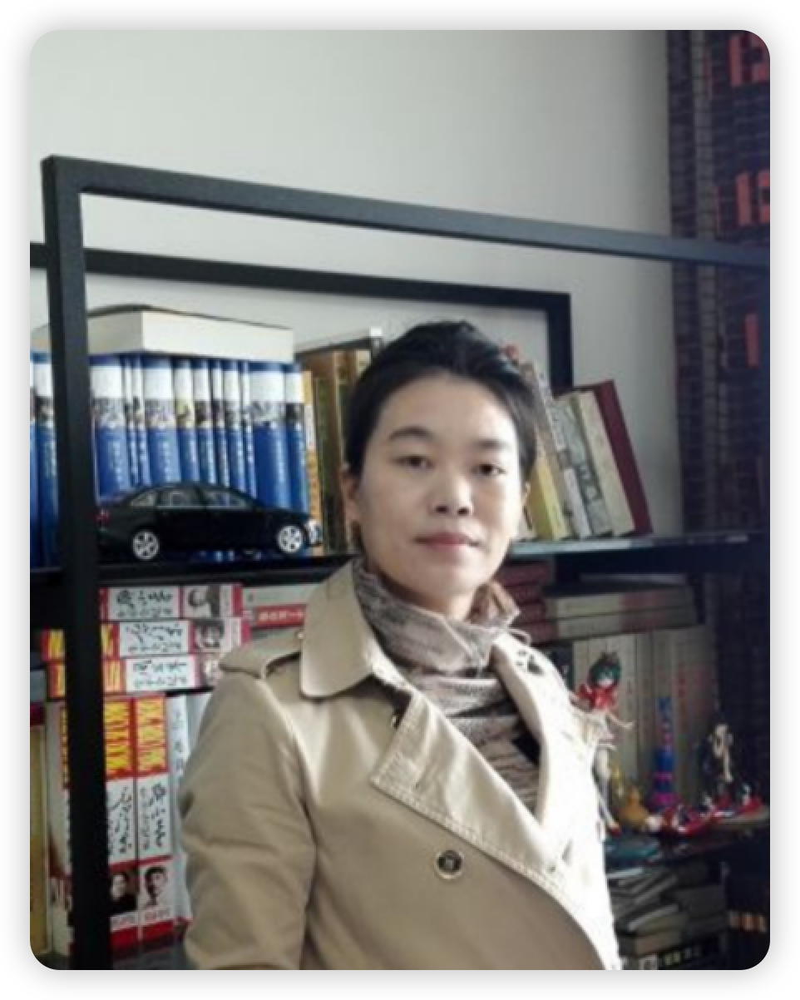

教师团队
杨裔
教授、博士生导师
研究方向：大数据；物联网；机器学习与人工智能
旅游信息融合处理与数据权属保护文旅部重点实验室主任、甘肃省人工智能与算力技术重点实验室执行主任。
李廉
教授、博士生导师
研究方向：计算机数学和网络计算等方面的基础理论及相关应用研究
国家"一、二层次千百万人才工程"人选，国务院特殊津贴专家，2020年"CCF杰出教育奖"获得者。

王建州
教授、博士生导师
研究方向：大数据处理与分析、人工智能与数学建模
现任兰州大学教授，东北财经大学统计科学研究所所长、悉尼科技大学工程与信息技术学院大数据与人工智能方向博士生导师。

李彩虹
高级实验师、硕士研究生
研究方向：电网预测，大数据计算模型，无线传感器，物联网理论
旅游信息融合处理与数据权属保护文旅部重点实验室副主任，甘肃省文旅大数据及智能化行业技术中心副主任。